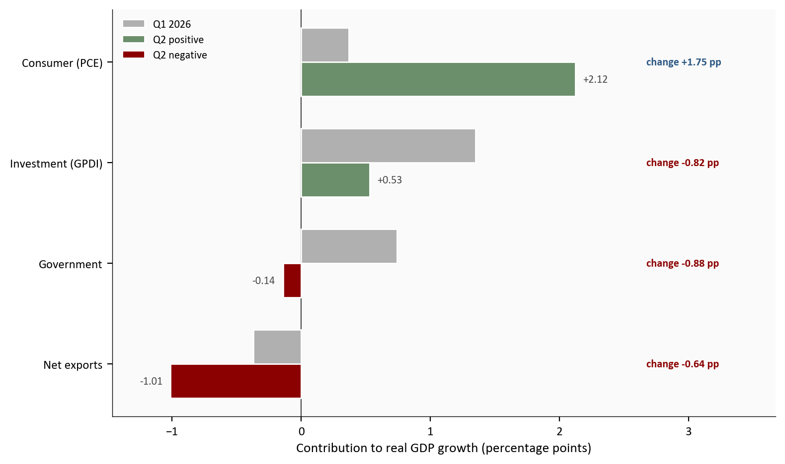
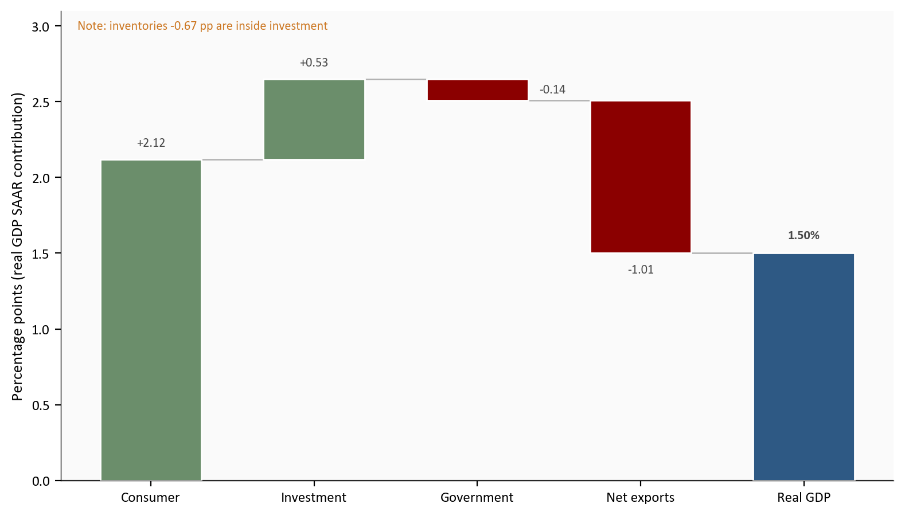
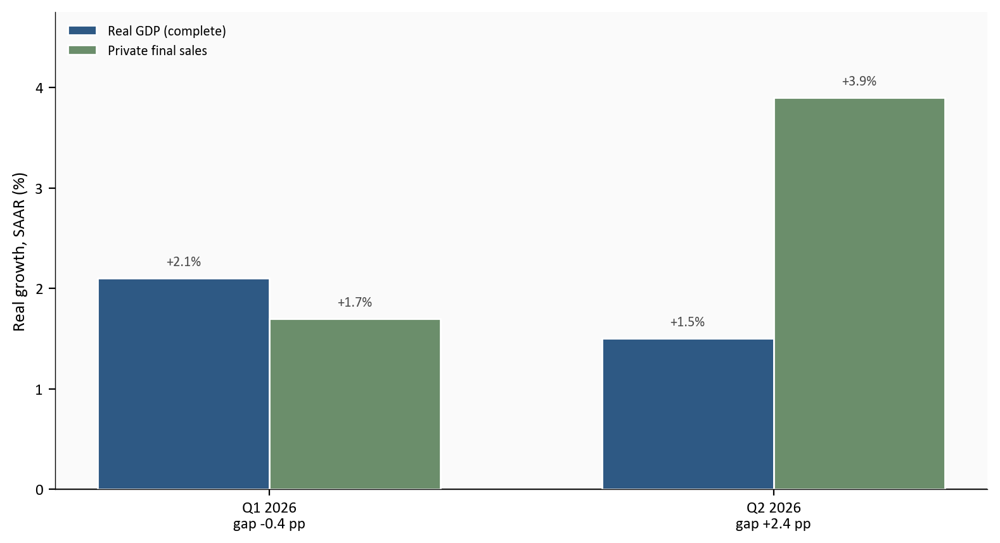
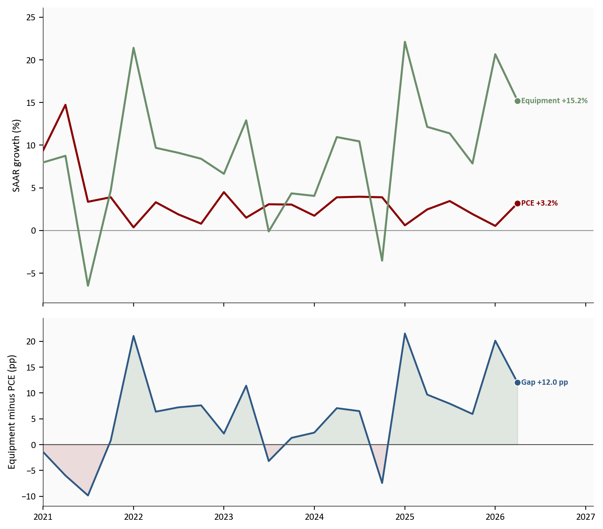
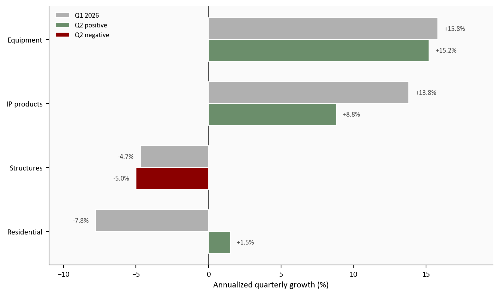
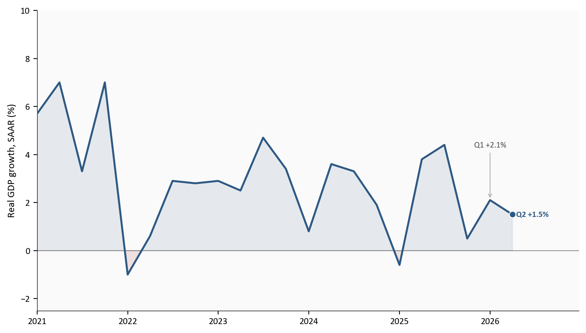
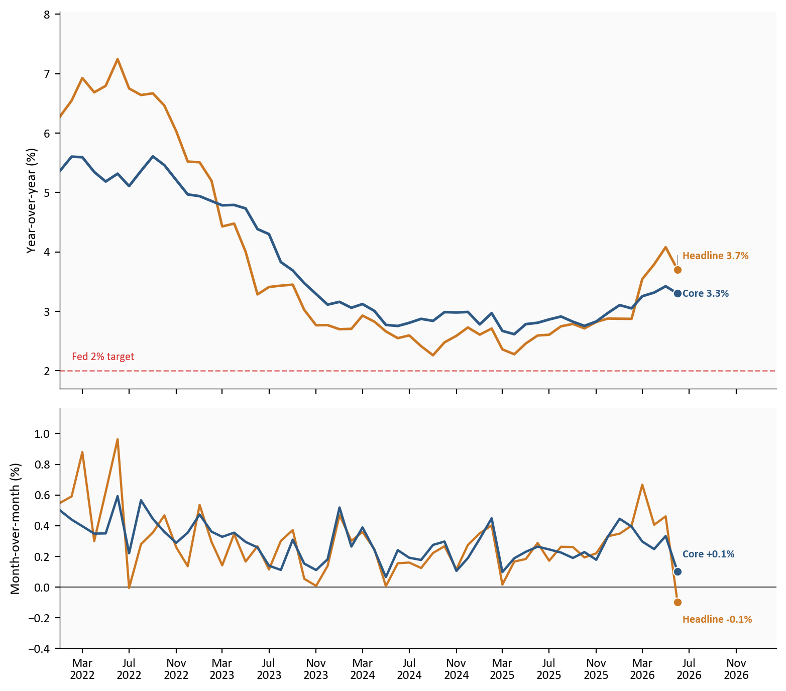

Q2 real GDP
+1.5%
vs +2.1% in Q1
Private final sales
+3.9%
gap vs GDP +2.4 pp
Real consumer spending
+3.2%
from +0.5% in Q1
June core PCE YoY
3.3%
headline 3.7%
BEA advance GDP and June PIO | 07/30/2026 | SAAR rates unless noted
Yoram Gilboa
July 30, 2026
The Bureau of Economic Analysis (BEA) released two linked prints on 07/30/2026: the advance estimate of second-quarter GDP and the June personal income and outlays report. Real gross domestic product (GDP)1 rose at a 1.5% annualized rate in Q2 2026, down from 2.1% in Q1 and below the 2.1% consensus track. The softer headline is not the whole story. Real final sales to private domestic purchasers2 accelerated to 3.9% from 1.7% in Q1, opening a 2.4 percentage-point gap between private demand and headline growth.
That gap is the release’s main interaction: consumer spending and equipment investment still supported demand, while inventories, net exports, and government subtracted enough to pull the total down. The same-day June personal consumption expenditures (PCE) price data add a second interaction across horizons. Headline PCE prices fell -0.1% month-over-month3, lowering the year-over-year rate to 3.7% from 4.1% in May. Core PCE, which excludes food and energy and is the Federal Reserve’s preferred inflation gauge, rose +0.1% on the month and stood 3.3% above a year earlier. Monthly relief is real; a clear return of core prices to the 2% target is not.
The Python code used to generate each chart is included in this post. Expand any chart block to see the full implementation. The complete data pipeline is:
01_fetch_data.py downloads quarterly GDP/investment series and monthly PCE, income, and labor series from FRED (requires FRED_API_KEY).02_clean_data.py computes SAAR growth rates and m/m, y/y, and three-month annualized PCE price changes, plus contribution-shift, bridge, and investment-mix tables. Canonical rate formulas are documented in that script.04_compute_stats.py writes every prose and card value to stats/summary_stats.json. Release-day BEA contribution and detail figures are marked # MANUAL: with source URLs when FRED has not yet caught up.Run order from this post folder: 01, then 02, then 04. Primary sources are the BEA Q2 GDP advance estimate and Personal Income and Outlays, June 2026.
BEA advance GDP and June PIO | 07/30/2026 | SAAR rates unless noted
GDP is the value of everything produced in the United States in a period. BEA builds the growth rate from four major spending blocks that together add up to total demand for that output.
Personal consumption expenditures, usually called PCE or simply consumer spending, are household purchases of goods and services: food, cars, rent, healthcare, streaming, restaurants, and the rest of the household basket. This is the largest block, typically about two thirds of GDP, so when consumers reaccelerate or stall the headline almost always moves with them.
Gross private domestic investment, or GPDI, covers business and housing capital formation. That includes equipment, software and research and development (intellectual property), factories and other structures, home building, and the change in inventories. Inventories are goods sitting in warehouses and on shelves. When firms draw those stocks down, GPDI can look soft even if equipment spending is hot.
Government spending in the GDP accounts is federal, state, and local consumption and investment, from defense and schools to infrastructure. In Q2, measured government growth was held down in part by Strategic Petroleum Reserve oil sales, which the accounts treat as a reduction in government consumption even though the oil itself shows up elsewhere in GDP.
Net exports equal exports minus imports. Exports add to GDP because foreigners buy U.S. output. Imports subtract because some domestic spending is satisfied by foreign production rather than U.S. production. A wider trade deficit therefore pulls the growth rate down even when domestic demand is firm. The Q2 drag is not a black box: export growth slowed while imports, led by capital goods, stayed strong. That pattern fits a world of ongoing AI-related equipment demand and still-elevated trade barriers, which we unpack with the investment and trade detail below.
A percentage point contribution answers a different question than a growth rate. Growth rates say how fast a sector expanded. Contributions say how many points of the overall GDP growth rate came from that sector. A small sector that grows very fast can still contribute less than a large sector that grows slowly.
When people say “GDP grew 1.5%,” they almost always mean real GDP growth, not the unadjusted dollar total. Nominal GDP is current-dollar output: quantities times the prices people actually paid. If prices rise and quantities stay flat, nominal GDP still rises. Real GDP removes that pure price effect so the growth rate tracks the volume of goods and services. That is the measure used for business-cycle and Fed debates, because it answers whether the economy is producing more stuff rather than whether invoices simply got larger in dollars.
BEA also reports the growth rate as a seasonally adjusted annual rate, or SAAR. Quarterly growth is first seasonally adjusted so Christmas retail or summer travel do not fake a boom or bust. Then the quarter-to-quarter change is scaled as if that same pace lasted a full year. A SAAR of 1.5% does not mean the economy is already 1.5% larger than a year ago. It means that if this quarter’s pace continued for four quarters, growth would be about 1.5%. Year-over-year rates answer the trailing twelve-month question; SAAR answers how hot the latest quarter was.
This post’s headline numbers and contribution charts use real GDP at a SAAR unless a price index is discussed on purpose.
The useful story is not only the Q2 levels, but the shift from Q1 to Q2. Consumer spending’s contribution jumped from +0.37pp to +2.12pp (a +1.75pp swing). Investment, government, and net exports all moved the other way: GPDI fell from +1.35pp to +0.53pp, government flipped from +0.74pp to -0.14pp after a -0.8% decline, and net exports widened from -0.37pp to -1.01pp.
That is why private demand can strengthen while headline real GDP slows. The household and fixed-investment core improved; inventories, trade, and government offsets worsened.
# Grouped horizontal bars: Q1 vs Q2 contributions by major component.
# Deltas are Q2 minus Q1. Formulas and MANUAL sources live in 02/04 scripts.
plot = df_shift.sort_values("sort").reset_index(drop=True)
labels = plot["component"].tolist()
y = np.arange(len(labels))
h = 0.34
fig, ax = plt.subplots(figsize=(8.0, 4.8))
ax.barh(
y + h / 2,
plot["q1_pp"],
height=h,
color=COLORS["light"],
edgecolor="white",
zorder=2,
)
ax.barh(
y - h / 2,
plot["q2_pp"],
height=h,
color=[COLORS["accent"] if v < 0 else COLORS["secondary"] for v in plot["q2_pp"]],
edgecolor="white",
zorder=3,
)
ax.axvline(0, color=COLORS["neutral"], linewidth=0.8, zorder=1)
ax.set_yticks(y)
ax.set_yticklabels(labels)
ax.set_xlabel("Contribution to real GDP growth (percentage points)")
# Only Q2 values next to bars; deltas live in a dedicated right column.
x_min = min(plot["q1_pp"].min(), plot["q2_pp"].min())
x_max = max(plot["q1_pp"].max(), plot["q2_pp"].max())
for i, row in plot.iterrows():
q2 = float(row["q2_pp"])
delta = float(row["delta_pp"])
if q2 >= 0:
ax.text(q2 + 0.06, y[i] - h / 2, f"{q2:+.2f}", va="center", ha="left",
fontsize=8, color=COLORS["neutral"])
else:
ax.text(q2 - 0.06, y[i] - h / 2, f"{q2:+.2f}", va="center", ha="right",
fontsize=8, color=COLORS["neutral"])
ax.text(
x_max + 0.55,
y[i],
f"change {delta:+.2f} pp",
va="center",
ha="left",
fontsize=8,
color=COLORS["primary"] if delta > 0 else COLORS["accent"],
fontweight="bold",
)
ax.set_xlim(x_min - 0.45, x_max + 1.55)
# Legend in free upper-left space, away from delta column.
ax.legend(
handles=[
Patch(facecolor=COLORS["light"], edgecolor="white", label="Q1 2026"),
Patch(facecolor=COLORS["secondary"], edgecolor="white", label="Q2 positive"),
Patch(facecolor=COLORS["accent"], edgecolor="white", label="Q2 negative"),
],
loc="upper left",
frameon=False,
fontsize=8,
)
plt.tight_layout()
fig.savefig(IMG_DIR / "contribution-shift.png", dpi=150, bbox_inches="tight")
Source: BEA GDP advance estimate, Q2 2026; Q1 contributions from the Q1 third estimate context.
The bridge chart below stacks the same arithmetic another way. Read it left to right: each green bar adds points of real GDP growth, each red bar subtracts, and the final blue bar is the real GDP SAAR that results. Gray connectors mark the running total from one step to the next, including the last step into Real GDP. Inventories are a memo inside investment (already inside the investment bar), not a fifth major addend.
# Waterfall of Q2 flow contributions only (inventory is caption/prose memo).
# Each floating bar is a contribution in percentage points; the final bar is
# real GDP growth (SAAR), equal to the sum of the signed contributions.
flows = df_bridge[df_bridge["kind"] == "flow"].copy()
total_row = df_bridge[df_bridge["kind"] == "total"].iloc[0]
memo = df_bridge[df_bridge["kind"] == "memo"]
inv = float(memo.iloc[0]["value"]) if len(memo) else np.nan
short_labels = {
"Consumer (PCE)": "Consumer",
"Investment (GPDI)": "Investment",
"Government": "Government",
"Net exports": "Net exports",
"Real GDP (SAAR)": "Real GDP",
}
steps = [short_labels.get(s, s) for s in list(flows["step"]) + [total_row["step"]]]
values = list(flows["value"]) + [total_row["value"]]
kinds = list(flows["kind"]) + ["total"]
# starts[i] = height where bar i begins (running sum for flow steps).
starts = []
running = 0.0
for val, kind in zip(values, kinds):
if kind == "total":
starts.append(0.0)
else:
starts.append(running)
running += val
fig, ax = plt.subplots(figsize=(8.0, 4.6))
x = np.arange(len(steps))
bar_colors = []
for val, kind in zip(values, kinds):
if kind == "total":
bar_colors.append(COLORS["primary"])
elif val >= 0:
bar_colors.append(COLORS["secondary"])
else:
bar_colors.append(COLORS["accent"])
ax.bar(x, values, bottom=starts, color=bar_colors, edgecolor="white", width=0.62, zorder=3)
# Gray connectors between every adjacent step, including Net exports -> Real GDP.
# For flow-to-flow, connect at the running total after step i.
# For flow-to-total, connect at that same final cumulative height to the top of Real GDP.
n_flows = len(flows)
for i in range(n_flows):
y_conn = starts[i] + values[i]
x0 = i + 0.31
x1 = i + 1 - 0.31
ax.plot([x0, x1], [y_conn, y_conn], color=COLORS["light"], linewidth=0.9, zorder=2)
# Value labels sit outside segments; tiny bars get side labels.
for i, (val, kind) in enumerate(zip(values, kinds)):
top = starts[i] + val
if kind == "total":
ax.text(i, val + 0.08, f"{val:.2f}%", ha="center", va="bottom",
fontsize=8, color=COLORS["neutral"], fontweight="bold")
elif abs(val) < 0.25:
ax.text(i + 0.38, starts[i] + val / 2, f"{val:+.2f}", ha="left", va="center",
fontsize=8, color=COLORS["neutral"])
elif val >= 0:
ax.text(i, top + 0.07, f"{val:+.2f}", ha="center", va="bottom",
fontsize=8, color=COLORS["neutral"])
else:
ax.text(i, top - 0.07, f"{val:+.2f}", ha="center", va="top",
fontsize=8, color=COLORS["neutral"])
# Inventory note in open upper-left space (no arrow across bars).
if not np.isnan(inv):
ax.text(
0.02, 0.98,
f"Note: inventories {inv:+.2f} pp are inside investment",
transform=ax.transAxes,
ha="left",
va="top",
fontsize=8,
color=COLORS["warning"],
bbox=dict(facecolor="#fafafa", edgecolor="none", alpha=0.95, pad=2.5),
zorder=6,
)
ax.axhline(0, color=COLORS["neutral"], linewidth=0.8, zorder=1)
ax.set_xticks(x)
ax.set_xticklabels(steps)
ax.set_ylabel("Percentage points (real GDP SAAR contribution)")
ax.set_xlim(-0.55, len(steps) - 0.45)
y_hi = max(starts[i] + values[i] for i in range(len(values) - 1))
ax.set_ylim(0, y_hi + 0.45)
plt.tight_layout()
fig.savefig(IMG_DIR / "gdp-bridge.png", dpi=150, bbox_inches="tight")
Source: BEA GDP advance estimate, Q2 2026. Inventory is a memo inside GPDI, not an extra addend. Real GDP here is inflation-adjusted SAAR growth, not current-dollar GDP.
Figure 3 compares two real, inflation-adjusted SAAR growth rates. It is not a real-versus-nominal chart. Real GDP is the complete accounting identity: consumer spending, investment including inventories, government, and net exports, with pure price changes already stripped out. Private final sales to private domestic purchasers, often shortened to private final sales, keep only consumer spending and private fixed investment. They leave out inventories, government, and net exports on purpose so the reader can see domestic private demand without those noisy offsets.
Both bars answer how hot the quarter was at an annualized pace after inflation adjustment. The difference is scope. Real GDP is the official bottom line for the whole economy. Private final sales are a cleaner read of what households and business capital budgets did. When private final sales exceed real GDP, as in Q2, domestic private demand was stronger than the headline. The gap is inventory drawdowns, net export drag, and government, not fake real growth. When private final sales lag real GDP, closer to the Q1 pattern, headline growth was helped more by those non-private pieces.
In Q2, private final sales rose to 3.9% while real GDP was only 1.5%, so the demand gap flipped to +2.4pp. That inversion is what the next chart is built to show.
# Side-by-side real GDP vs private final sales. Gap sits under x labels, not on bars.
quarters = df_private["quarter"].tolist()
gdp_vals = df_private["gdp_growth"].to_numpy()
pfs_vals = df_private["private_final_sales"].to_numpy()
gaps = df_private["demand_gap_pp"].to_numpy()
x = np.arange(len(quarters))
width = 0.34
fig, ax = plt.subplots(figsize=(8.0, 4.4))
b1 = ax.bar(x - width / 2, gdp_vals, width, color=COLORS["primary"], edgecolor="white",
label="Real GDP (complete)", zorder=2)
b2 = ax.bar(x + width / 2, pfs_vals, width, color=COLORS["secondary"], edgecolor="white",
label="Private final sales", zorder=2)
ax.axhline(0, color=COLORS["neutral"], linewidth=0.8, zorder=1)
for bars in (b1, b2):
for bar in bars:
val = bar.get_height()
ax.text(
bar.get_x() + bar.get_width() / 2,
val + 0.10,
f"{val:+.1f}%",
ha="center",
va="bottom",
fontsize=8,
color=COLORS["neutral"],
)
# Two-line x labels keep gap text away from value labels and legend.
tick_labels = [
f"{q}\ngap {g:+.1f} pp" for q, g in zip(quarters, gaps)
]
ax.set_xticks(x)
ax.set_xticklabels(tick_labels)
ax.set_ylabel("Real growth, SAAR (%)")
ax.set_ylim(0, max(gdp_vals.max(), pfs_vals.max()) + 0.85)
ax.legend(loc="upper left", frameon=False, fontsize=8)
plt.tight_layout()
fig.savefig(IMG_DIR / "private-demand.png", dpi=150, bbox_inches="tight")
Source: BEA GDP advance estimate, Q2 2026. Both series are real (inflation-adjusted) SAAR growth rates.
“PCE” appears twice in macro data and the labels are easy to mix up. Real PCE spending is the inflation-adjusted volume of goods and services households buy. The PCE price index is how much consumer prices rose. This section is about spending, not prices. Real PCE is the consumer block inside GDP, again as a SAAR growth rate so Q2 is comparable to Q1. Prices return in Section 4.
Real personal consumption expenditures grew +3.2% annualized in Q2 after a soft +0.5% in Q1. That is a clear reacceleration: households bought more goods and services at a faster annualized pace than in the prior quarter. BEA’s technical notes point to both goods and services, not a single category spike. Within goods, prescription drugs and light trucks were important. Within services, food services, accommodations, and financial services led. Broad participation matters because a rebound driven by only one category is more fragile than a rebound spread across the basket.
Nonresidential equipment investment is business spending on machines, vehicles, computers, servers, and related capital goods. It is the closest high-frequency national-accounts window on the AI and data-center buildout, though it also includes non-tech equipment. Equipment investment grew +15.2% after +15.8%. That is still double-digit strength. The private-demand story is not consumers or businesses in isolation. It is consumers and businesses, running at different speeds.
That equipment boom is also where frontier AI models and open-weight systems leave a footprint in the national accounts. Frontier closed models from the largest labs still drive huge, concentrated spending on high-end GPUs, networking gear, and power-dense data centers, because training and serving the biggest models is capital intensive. Open-weight and open-source large language models change the shape of demand without removing it. They lower the cost of deploying capable systems for many firms and governments, which spreads inference and fine-tuning workloads onto more operators, including cloud customers and on-prem clusters. The national accounts do not split equipment into “frontier” versus “open-weight” boxes, but both forces can lift information-processing and industrial equipment at once: a few hyperscalers racing at the frontier, and a wider set of adopters running cheaper open models at scale. Q2’s still-hot equipment print is consistent with that dual channel. It does not tell us which channel won the quarter, only that capital goods demand remained far stronger than ordinary consumer growth.
The lower panel of the next chart plots the equipment-minus-PCE gap in percentage points: equipment SAAR growth minus real PCE SAAR growth. A large positive gap means capital budgets are outrunning household spending growth. A gap near zero means the two engines are growing at similar paces. A negative gap means consumers are growing faster than equipment, which has been rare in the recent AI cycle. A wide positive gap does not mean consumers are weak. It means equipment is exceptionally strong relative to consumers. After Q2’s consumer rebound, the gap is still large because equipment stayed near 15.2% while PCE only climbed to 3.2%.
# Dual panel: growth rates on top, equipment-minus-PCE gap on bottom.
# Rate columns come from scripts/02_clean_data.py (SAAR formulas documented there).
plot = df_q.loc["2021-01-01":"2026-04-01", ["pce_growth", "equipment_growth", "equip_minus_pce"]].dropna(how="any")
fig, (ax1, ax2) = plt.subplots(
2, 1, figsize=(8.0, 7.0), sharex=True, gridspec_kw={"height_ratios": [2.2, 1.4]}
)
ax1.plot(plot.index, plot["pce_growth"], color=COLORS["accent"], linewidth=1.9, zorder=3)
ax1.plot(plot.index, plot["equipment_growth"], color=COLORS["secondary"], linewidth=1.9, zorder=3)
ax1.axhline(0, color=COLORS["neutral"], linewidth=0.8, alpha=0.6, zorder=1)
ax1.set_ylabel("SAAR growth (%)")
# Extra headroom so endpoint labels never clip the top spine area.
ax1.set_ylim(plot[["pce_growth", "equipment_growth"]].min().min() - 2,
plot[["pce_growth", "equipment_growth"]].max().max() + 4)
entries = [
{
"x": plot.index[-1],
"y": float(plot["pce_growth"].iloc[-1]),
"text": f"PCE {plot['pce_growth'].iloc[-1]:+.1f}%",
"color": COLORS["accent"],
},
{
"x": plot.index[-1],
"y": float(plot["equipment_growth"].iloc[-1]),
"text": f"Equipment {plot['equipment_growth'].iloc[-1]:+.1f}%",
"color": COLORS["secondary"],
},
]
label_endpoints(ax1, entries, gap_frac=0.10)
extend_x_for_labels(ax1, plot.index, pad_frac=0.16)
ax2.fill_between(
plot.index, plot["equip_minus_pce"], 0,
where=plot["equip_minus_pce"] >= 0,
color=COLORS["secondary"], alpha=0.18, interpolate=True,
)
ax2.fill_between(
plot.index, plot["equip_minus_pce"], 0,
where=plot["equip_minus_pce"] < 0,
color=COLORS["accent"], alpha=0.12, interpolate=True,
)
ax2.plot(plot.index, plot["equip_minus_pce"], color=COLORS["primary"], linewidth=1.7, zorder=3)
ax2.axhline(0, color=COLORS["neutral"], linewidth=0.8, zorder=1)
ax2.scatter(
plot.index[-1], plot["equip_minus_pce"].iloc[-1],
s=40, color=COLORS["primary"], edgecolors="white", linewidth=0.8, zorder=5,
)
gap_last = float(plot["equip_minus_pce"].iloc[-1])
ax2.text(
plot.index[-1], gap_last,
f" Gap {gap_last:+.1f} pp",
color=COLORS["primary"], fontsize=8, fontweight="bold", va="center",
)
ax2.set_ylabel("Equipment minus PCE (pp)")
ax2.set_ylim(plot["equip_minus_pce"].min() - 2, plot["equip_minus_pce"].max() + 3)
ax2.xaxis.set_major_formatter(mdates.DateFormatter("%Y"))
ax2.xaxis.set_major_locator(mdates.YearLocator())
extend_x_for_labels(ax2, plot.index, pad_frac=0.16)
plt.tight_layout()
fig.savefig(IMG_DIR / "pce-vs-equipment.png", dpi=150, bbox_inches="tight")
Source: FRED series PCEC96 (real PCE) and Y033RC1Q027SBEA (nonresidential equipment), with Q2 2026 rates aligned to the BEA advance estimate. Both series are real SAAR growth rates.
The quarterly GDP tables give the SAAR story. The Personal Income and Outlays report gives the latest month. They should usually point the same direction; when they do, confidence rises.
In June 2026, real PCE spending rose +0.4% month-over-month. That is volume after stripping price changes. Nominal PCE rose 65.2 billion dollars (+0.3%), which is current-dollar spending before inflation adjustment. Services accounted for 58.2 billion of that nominal gain and goods for 7.0 billion, so services still dominate the monthly lift. Personal income and disposable personal income each rose +0.2%. Disposable personal income is income after taxes, the cash households can spend or save. The personal saving rate stood at 2.7% of disposable income, still low by post-pandemic standards. Low saving means households have less buffer if prices rise again or job growth slows.
June lines up with the quarterly consumer rebound: real spending is up, income is up, and services lead. The soft spot is the thin saving cushion, not a collapse in outlays. Nominal PCE can rise because prices rose, because volumes rose, or both. Real PCE isolates the volume piece. The saving rate then asks how much of after-tax income households chose not to spend.
Section 1 treated GPDI as one contribution bar. Inside that bar sit very different behaviors, so a strong investment headline can hide weak housing or weak factories, and a soft investment contribution can hide booming equipment.
Private nonresidential fixed investment, or PNFI, is business capital spending on equipment, structures, and intellectual property. It excludes homes and inventory swings. Equipment is machines, vehicles, computers, servers, and industrial gear. Intellectual property products cover software, research and development, and related intangibles. Structures are factories, offices, warehouses, and other nonresidential buildings. Residential investment is home building and related residential fixed investment. Inventory investment is the change in stockpiles; it already lives inside GPDI, not inside PNFI.
Private nonresidential fixed investment rose +8.4% annualized in Q2, down from +10.6% but still solid. Equipment stayed near +15.2% after +15.8%, remaining the hot core of the cycle. Intellectual property products cooled to +8.8% from +13.8%, still positive but less extreme. Structures fell -5.0% after -4.7%, a tenth consecutive weak quarter, led on the BEA notes by manufacturing structures. Residential investment rose +1.5%, its first gain in six quarters after -7.8% in Q1. Read that as a split: AI-linked capital goods remain strong, traditional building is not, and housing finally stopped subtracting.
That equipment strength is also the bridge to the AI industrial story. Frontier model labs still need dense clusters of top-tier accelerators to train and serve the largest closed systems. Open-weight and open-source models do not erase that demand; they often multiply deployment. Cheaper weights make it rational for more firms to stand up inference stacks, fine-tune locally, and buy mid-range as well as high-end hardware. The BEA equipment category cannot separate those motives, but the combination of hyperscale frontier buildouts and broader open-model adoption is a natural way to read why information-processing and industrial equipment stayed so firm while consumers only reaccelerated into the low single digits.
GPDI contributed only +0.53pp to real GDP even though equipment was hot, because inventories subtracted -0.67pp. Inventory investment is not “oil sales” and it is not the same as the Strategic Petroleum Reserve story. When private inventory investment falls, firms are adding less to stocks than before, or drawing stocks down. Measured GDP treats that as less production absorbed into inventories, so the investment contribution shrinks even if final sales are fine.
BEA’s advance technical notes are specific about where the Q2 inventory drag came from. The largest contributor to the decrease in private inventory investment was wholesale trade, based primarily on Census Bureau inventory book value data. That is distributors’ warehouses and wholesale channels, not a direct statement that strategic oil stocks or a Middle East conflict emptied U.S. business inventories. The energy-war channel that does show up clearly in this release is government: higher sales of crude oil from the Strategic Petroleum Reserve reduce measured government consumption in the accounts. Those SPR sales are a government-line effect, not the wholesale inventory subtraction inside GPDI.
Inventories can fall for healthy or unhealthy reasons. Firms may run stocks down because final demand is strong and goods are selling through, or because they over-ordered earlier and are correcting, or because they expect softer sales ahead. With real consumer spending reaccelerating and equipment still booming, the more natural reading is that final demand absorbed goods rather than that the economy suddenly stopped ordering. The clean check is whether real final sales stay firm while inventory contributions reverse; that is a job for the second estimate and the next few quarters, not a one-line Iran attribution.
Net exports subtracted -1.01pp from real GDP growth in Q2, worse than the -0.37pp drag in Q1. Exports grew +4.5% while imports grew +11.5%. Imports alone contributed -1.51pp as a subtraction. On the export side, BEA pointed to goods strength led by petroleum and related products, partly offset by weaker services exports such as travel and some business services. On the import side, the increase was led by capital goods except automotive, especially telecommunications equipment, semiconductors and related devices, and industrial equipment. Those are exactly the categories that ride an AI and industrial capex wave.
Tariffs enter this story as a price and timing distortion, not as a single switch that turns imports off. Higher tariffs on Chinese and other foreign electronics and industrial components raise the landed cost of many capital goods. In principle that can push firms to substitute toward domestic suppliers, delay projects, or pull imports forward before duties bite harder. In the Q2 accounts, imports of the very equipment categories tied to data centers and industrial modernization remained strong. That pattern is more consistent with capex demand that is still willing to pay for foreign gear, possibly after earlier front-loading and with incomplete substitution, than with a pure tariff collapse in import volumes. Tariffs can still widen the trade drag if they raise import prices while volumes stay firm, or if export competitiveness suffers through retaliation and a stronger dollar. What the advance estimate can show cleanly is composition: capital-goods imports and still-positive exports, with the arithmetic net still a large subtraction from GDP.
So the net-export line is not a simple “America is not competitive this quarter” headline. It is the sum of an AI-era equipment import boom, softer services exports, and a tariff-and-dollar environment that has not yet replaced foreign capital goods with domestic ones at scale. Combined with wholesale inventory drawdowns, that is why complete real GDP can print only 1.5% while private final sales run near 3.9%.
# Grouped horizontal bars for investment subcomponent SAAR growth, Q1 vs Q2.
# Values come from BEA component detail (MANUAL tables in 02/04).
plot = df_invest.sort_values("sort").reset_index(drop=True)
labels = plot["component"].tolist()
y = np.arange(len(labels))
h = 0.34
fig, ax = plt.subplots(figsize=(8.0, 4.8))
ax.barh(
y + h / 2, plot["q1"], height=h,
color=COLORS["light"], edgecolor="white", zorder=2,
)
q2_colors = [COLORS["accent"] if v < 0 else COLORS["secondary"] for v in plot["q2"]]
ax.barh(
y - h / 2, plot["q2"], height=h,
color=q2_colors, edgecolor="white", zorder=3,
)
ax.axvline(0, color=COLORS["neutral"], linewidth=0.8, zorder=1)
ax.set_yticks(y)
ax.set_yticklabels(labels)
ax.set_xlabel("Annualized quarterly growth (%)")
x_max = max(plot["q1"].max(), plot["q2"].max())
x_min = min(plot["q1"].min(), plot["q2"].min())
pad = 0.45
for i, row in plot.iterrows():
q1, q2 = float(row["q1"]), float(row["q2"])
ax.text(
q2 + (pad if q2 >= 0 else -pad), y[i] - h / 2,
f"{q2:+.1f}%", va="center", ha="left" if q2 >= 0 else "right",
fontsize=8, color=COLORS["neutral"],
)
ax.text(
q1 + (pad if q1 >= 0 else -pad), y[i] + h / 2,
f"{q1:+.1f}%", va="center", ha="left" if q1 >= 0 else "right",
fontsize=8, color=COLORS["neutral"],
)
ax.set_xlim(x_min - 3.2, x_max + 3.8)
ax.legend(
handles=[
Patch(facecolor=COLORS["light"], edgecolor="white", label="Q1 2026"),
Patch(facecolor=COLORS["secondary"], edgecolor="white", label="Q2 positive"),
Patch(facecolor=COLORS["accent"], edgecolor="white", label="Q2 negative"),
],
loc="upper left",
frameon=False,
fontsize=8,
)
plt.tight_layout()
fig.savefig(IMG_DIR / "investment-mix.png", dpi=150, bbox_inches="tight")
Source: BEA GDP advance estimate, Q2 2026; Q1 component rates from the Q1 third-estimate context. All rates are real SAAR growth.
The next chart is only real GDP SAAR, the complete headline from Section 1. It answers a different question than the investment mix: not which capital goods moved, but where this quarter sits in the recent cycle. Values above zero mean the economy expanded that quarter at an annualized rate. Values below zero mean contraction, a fall in the volume of output. Large swings early in the window are post-pandemic volatility; the useful comparison for this post is the step from Q1 (+2.1%) to Q2 (+1.5%).
Q2 is cooler than Q1, not a freefall. Combined with Section 1’s private-final-sales gap, the path looks like headline cooling with private demand still alive, not a classic demand cliff.
# Start in 2021 so the pandemic spike does not crush recent labels.
# Column gdp_growth is real GDP percent change, SAAR (FRED A191RL1Q225SBEA + Q2 overlay).
plot = df_q.loc["2021-01-01":"2026-04-01", "gdp_growth"].dropna()
fig, ax = plt.subplots(figsize=(8.0, 4.6))
ax.fill_between(plot.index, plot.values, 0, where=plot.values >= 0,
color=COLORS["primary"], alpha=0.10, interpolate=True)
ax.fill_between(plot.index, plot.values, 0, where=plot.values < 0,
color=COLORS["accent"], alpha=0.10, interpolate=True)
ax.plot(plot.index, plot.values, color=COLORS["primary"], linewidth=1.9, zorder=3)
ax.axhline(0, color=COLORS["neutral"], linewidth=0.8, alpha=0.6, zorder=1)
# Only the latest point is marked; Q1 sits in a free zone above the line.
ax.scatter(
plot.index[-1], plot.iloc[-1],
s=40, color=COLORS["primary"], edgecolors="white", linewidth=0.8, zorder=5,
)
ax.text(
plot.index[-1], plot.iloc[-1],
f" Q2 {plot.iloc[-1]:+.1f}%",
color=COLORS["primary"], fontsize=8, fontweight="bold", va="center",
)
ax.annotate(
f"Q1 {plot.iloc[-2]:+.1f}%",
xy=(plot.index[-2], plot.iloc[-2]),
xytext=(plot.index[-2], plot.iloc[-2] + 2.2),
ha="center",
fontsize=8,
color=COLORS["neutral"],
arrowprops=dict(arrowstyle="->", color=COLORS["light"], lw=0.8),
)
extend_x_for_labels(ax, plot.index, pad_frac=0.14)
ax.set_ylim(plot.min() - 1.5, plot.max() + 3.0)
ax.set_ylabel("Real GDP growth, SAAR (%)")
ax.xaxis.set_major_formatter(mdates.DateFormatter("%Y"))
ax.xaxis.set_major_locator(mdates.YearLocator())
plt.tight_layout()
fig.savefig(IMG_DIR / "gdp-growth-history.png", dpi=150, bbox_inches="tight")
Source: FRED series A191RL1Q225SBEA (real GDP percent change, SAAR), with Q2 2026 set to the BEA advance estimate.
This section switches from spending in Section 2 to prices. Same PCE family, different question: not whether households are buying more, but whether the prices they pay are still rising too fast.
The Fed watches the PCE price index more closely than the Consumer Price Index because PCE covers a broader set of consumer goods and services and updates its weights with actual spending shares, while CPI is built on an urban consumer basket with weights that move more slowly. CPI remains important for households and markets, but FOMC communication and the formal 2% goal are anchored on PCE. Headline PCE includes food and energy. Core PCE excludes food and energy to reduce noise from gasoline and grocery swings. Neither series is the whole truth alone. Headline is closer to what households feel at the pump; core is closer to underlying inflation for policy.
Inflation can look soft or hot depending on the window. Month-over-month answers what happened in the latest month: in June, headline PCE prices fell -0.1% and core rose +0.1%. Year-over-year asks how the latest month compares with a year earlier: headline cooled to 3.7% from 4.1% in May, while core eased only to 3.3% from 3.4%. The three-month annualized pace asks what would happen if the last three months kept running for a year; core is about 2.9% on that measure, softer than year-over-year but still above 2%. The quarterly SAAR from the GDP accounts asks how hot consumer prices were over the whole quarter: the PCE price index rose 5.1% annualized after 4.6% in Q1, and core PCE prices rose 3.4% after 4.4%. The price index for gross domestic purchases rose 5.7% annualized, a broader domestic price measure than consumer prices alone.
June is friendliest at the monthly headline and still sticky at core year-over-year. The friendly pieces are the headline month-over-month decline, a modest core month-over-month print, and some cooling in headline year-over-year. The unfinished pieces are core year-over-year still in the low 3s, a quarterly PCE price SAAR far above 2%, and the simple fact that one month never rewrites a quarter. One friendly month does not cancel a hot quarter.
# Dual panel: YoY on top, MoM on bottom. Endpoint labels only (no legend).
# Rate formulas live in scripts/02_clean_data.py; June values may be BEA overlays.
plot = df_m.loc["2022-01-01":, ["pce_yoy", "core_pce_yoy", "pce_mom", "core_pce_mom"]].dropna()
fig, (ax1, ax2) = plt.subplots(
2, 1, figsize=(8.0, 7.0), sharex=True, gridspec_kw={"height_ratios": [2.2, 1.4]}
)
ax1.plot(plot.index, plot["pce_yoy"], color=COLORS["warning"], linewidth=1.8, zorder=2)
ax1.plot(plot.index, plot["core_pce_yoy"], color=COLORS["primary"], linewidth=1.9, zorder=3)
ax1.axhline(2.0, color=COLORS["fed_target"], linestyle="--", linewidth=1.0, alpha=0.5, zorder=1)
# Target note on the left, clear of the rising 2026 lines.
ax1.text(
plot.index[1], 2.18, "Fed 2% target",
color=COLORS["fed_target"], fontsize=8, alpha=0.85,
)
ax1.set_ylabel("Year-over-year (%)")
ax1.set_ylim(1.7, plot[["pce_yoy", "core_pce_yoy"]].max().max() + 0.8)
label_endpoints(
ax1,
[
{
"x": plot.index[-1],
"y": float(plot["pce_yoy"].iloc[-1]),
"text": f"Headline {plot['pce_yoy'].iloc[-1]:.1f}%",
"color": COLORS["warning"],
},
{
"x": plot.index[-1],
"y": float(plot["core_pce_yoy"].iloc[-1]),
"text": f"Core {plot['core_pce_yoy'].iloc[-1]:.1f}%",
"color": COLORS["primary"],
},
],
gap_frac=0.10,
)
extend_x_for_labels(ax1, plot.index, pad_frac=0.16)
ax2.plot(plot.index, plot["pce_mom"], color=COLORS["warning"], linewidth=1.6, zorder=2)
ax2.plot(plot.index, plot["core_pce_mom"], color=COLORS["primary"], linewidth=1.7, zorder=3)
ax2.axhline(0, color=COLORS["neutral"], linewidth=0.8, zorder=1)
ax2.scatter(
plot.index[-1], plot["pce_mom"].iloc[-1],
s=40, color=COLORS["warning"], edgecolors="white", linewidth=0.8, zorder=5,
)
ax2.scatter(
plot.index[-1], plot["core_pce_mom"].iloc[-1],
s=40, color=COLORS["primary"], edgecolors="white", linewidth=0.8, zorder=5,
)
# Force vertical separation: core above, headline below the zero line.
mom_h = float(plot["pce_mom"].iloc[-1])
mom_c = float(plot["core_pce_mom"].iloc[-1])
ax2.text(
plot.index[-1], mom_c + 0.08,
f" Core {mom_c:+.1f}%",
color=COLORS["primary"], fontsize=8, fontweight="bold", va="bottom",
)
ax2.text(
plot.index[-1], mom_h - 0.08,
f" Headline {mom_h:+.1f}%",
color=COLORS["warning"], fontsize=8, fontweight="bold", va="top",
)
ax2.set_ylabel("Month-over-month (%)")
ax2.set_ylim(
min(plot[["pce_mom", "core_pce_mom"]].min().min(), -0.25) - 0.15,
plot[["pce_mom", "core_pce_mom"]].max().max() + 0.20,
)
ax2.xaxis.set_major_formatter(mdates.DateFormatter("%b\n%Y"))
ax2.xaxis.set_major_locator(mdates.MonthLocator(interval=4))
extend_x_for_labels(ax2, plot.index, pad_frac=0.16)
plt.tight_layout()
fig.savefig(IMG_DIR / "pce-inflation.png", dpi=150, bbox_inches="tight")
Source: FRED series PCEPI (headline PCE prices) and PCEPILFE (core PCE prices); June 2026 rates aligned to the BEA Personal Income and Outlays release.
How to read the dual panel is straightforward. On the top panel, distance above the dashed 2% line is how far inflation remains from the Fed’s goal. Core stuck near 3.3% means underlying prices are still too high even after June’s softer headline. On the bottom panel, June’s headline dip shows short-run relief that is often energy-sensitive, while a still-slightly-positive core print means the non-food, non-energy basket did not fall with the headline. If both panels were soft for several months and quarterly SAAR cooled, the Fed would have a cleaner path to ease. That is not this print.
Q2 was a set of interactions, not a single number. On the growth side, complete real GDP slowed to +1.5% from +2.1%, missing the 2.1% consensus track, while private final sales accelerated to +3.9% and opened a +2.4pp gap over the headline. Consumers rebounded, equipment stayed hot, structures stayed weak, residential finally turned up, and inventories plus net exports held the total down. The inventory drag was led by wholesale trade in the BEA notes, not by a direct oil-war inventory collapse, while the SPR oil-sales effect shows up mainly in government. The net-export drag reflects strong capital-goods imports and softer services exports in a tariff-heavy environment that has not yet displaced foreign equipment demand.
On the price side, June headline PCE prices fell month-over-month and cooled year-over-year, but core PCE stayed sticky near 3.3% year-over-year with a still-positive monthly print, and the quarterly PCE price SAAR in the GDP accounts ran hot at 5.1% for headline and 3.4% for core. That mix argues against reading the dual release as either a clean growth scare or a clear inflation victory. Private demand is not collapsing; core disinflation is not finished.
The AI capital story sits underneath the equipment and import lines rather than in a separate BEA table. Frontier closed models still pull concentrated spending into the densest GPU clusters. Open-weight and open-source systems lower the cost of capable AI and can spread inference and fine-tuning onto more balance sheets. Both channels can show up as equipment investment and capital-goods imports at the same time. Until the national accounts get better product detail, the honest claim is modest: Q2 looks like an economy still funding compute capacity faster than it is funding consumer goods growth, while trade arithmetic and inventory bookkeeping keep headline GDP softer than private final sales.
For markets. Soft headline GDP with a positive private-demand gap and firm equipment investment supports a hold-heavy path more than a rapid easing narrative. Watch the second estimate on 08/26/2026: inventory and trade revisions can rewrite the headline without rewriting the demand story, and capital-goods import detail will show whether the AI-linked trade drag is still intensifying.
For the Fed. The dual mandate needs both full employment and 2% inflation. Core PCE at 3.3% year-over-year, a still-positive core monthly print, and a 5.1% quarterly PCE price index keep the inflation side in view. One -0.1% monthly headline print is welcome; it is not yet a sustained core path to 2%. Soft GDP alone does not force cuts when private final sales are 3.9%.
For households. Real spending rose in June, so the volume of consumption improved. A 2.7% saving rate still leaves little cushion. Headline price relief helps at the pump and in monthly bills; sticky core prices mean the broader cost-of-living backdrop is not fully normalized.
The next checkpoints are concrete. The second GDP estimate and corporate profits arrive on 08/26/2026, where inventory and trade revisions matter most. The next Personal Income and Outlays release should be read for both July PCE prices and real spending, because the policy signal needs both sides. It is also worth watching whether the equipment-minus-PCE gap narrows if consumers keep reaccelerating, whether inventory contributions reverse without private final sales cracking, and whether core month-over-month stays near zero long enough to pull year-over-year and quarterly SAAR down. On the AI side, the practical question is whether capital-goods imports and equipment investment stay elevated even as open-weight deployment spreads, or whether the next leg of the cycle cools once the densest frontier clusters are in place.
Advance GDP rests on incomplete source data and BEA assumptions for the third month of the quarter, so contributions can revise in the second and third estimates. Monthly PCE changes are seasonally adjusted and can reverse the next month. FRED historical series power the charts, while release-day contribution and component rates are aligned to BEA tables where public FRED vintages lag. The inventory memo in the bridge chart is already inside GPDI and is shown only for interpretation, not as a fifth major addend. Equipment is a proxy for AI-related capex, not a pure AI series; it includes non-tech machinery, and it does not separate frontier closed-model clusters from open-weight inference stacks. Tariff effects on net exports are inferred from composition and timing rather than from a single official “tariff contribution” line in the advance estimate.
| Item | Detail |
|---|---|
| Real GDP growth | BEA advance estimate, real GDP SAAR, Q2 2026 |
| Private final sales | BEA real final sales to private domestic purchasers (also real SAAR) |
| Contributions / bridge | BEA component contributions to percent change in real GDP |
| Investment mix | BEA equipment, IP products, structures, residential SAAR |
| Monthly income and prices | BEA Personal Income and Outlays, June 2026 |
| Historical chart series | FRED: A191RL1Q225SBEA, PCEC96, Y033RC1Q027SBEA, PCEPI, PCEPILFE |
| Pipeline | scripts/01_fetch_data.py (download), 02_clean_data.py (rates and tables), 04_compute_stats.py (prose keys) |
| Primary releases | Q2 GDP advance; June PIO |
Data current as of 07/30/2026. BEA advance estimate for Q2 2026 GDP and Personal Income and Outlays for June 2026, both released 07/30/2026. Second GDP estimate due 08/26/2026.
Real GDP measures the inflation-adjusted value of goods and services produced in the United States. The advance estimate is the first of three BEA vintages for a quarter.↩︎
Private domestic final sales equal consumer spending plus private fixed investment. They strip out inventories, net exports, and government and are a cleaner read on private demand.↩︎
Month-over-month (m/m) is the change from one month to the next.↩︎